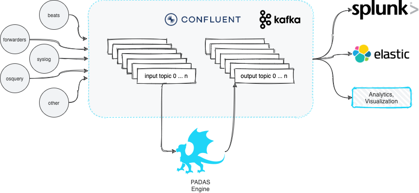

Overview
PADAS is built on top of robust Confluent Kafka Platform and enables organizations to transform, analyze, and filter TBs of streaming data in real-time. The goal is to keep things simple and take some of the burden away from existing SIEM and Analytics platforms by running various pipelines (combination of tasks that perform transformations and detections). PADAS comes with out-of-the-box integration examples (e.g. Winlogbeat, Splunk) and ready-to-implement rules pertinent to MITRE ATT&CK Framework. Any other custom rules can also be added (via PDL) without any dependency to existing SIEM or Analytics infrastructure.

Quick Links
Introduction: This review provides information on Padas architecture and basic concepts to quickly get started on your preferred platform.
Quick Start: Get up and running with this quick start tutorial to build a simple topology to transform and filter sample data.
Installation: This section provides details on system requirements and how to install and run PADAS in production environments.
Using Padas: This guide provides information on how to utilize PADAS Manager for configuring transformations and rules.